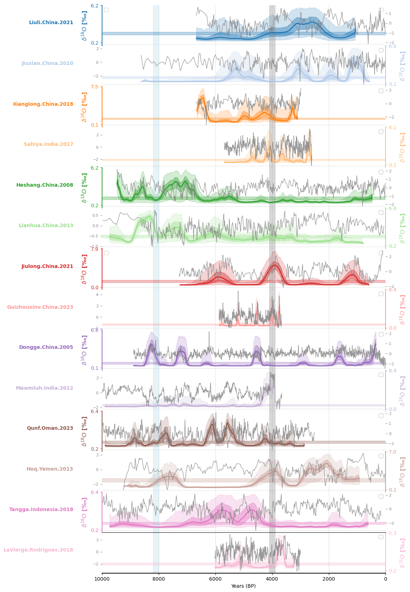

Laplacian Eigenmaps for Recurrence Matrices (LERM)#
Here we reproduce the figures displaying the LERM analysis. The computations themselves were done on CARC machines. See James et al. 2024 for details on the method, as well as information on how to run it yourself.
Note: This notebook assumes the existence of pickle files that need to have been created previously. If you are running this notebook on your machine, make sure you’ve successfully run both of the notebooks in the Loading Data folder.
import os
import pickle
import ammonyte as ammo
import pyleoclim as pyleo
import numpy as np
import matplotlib.pyplot as plt
import seaborn as sns
import pandas as pd
import scipy.stats as stats
import matplotlib.transforms as transforms
from matplotlib.ticker import FormatStrFormatter
from pylipd.lipd import LiPD
with open('../../data/pickle/preprocessed_ens_dict.pkl', 'rb') as f:
preprocessed_ens_dict = pickle.load(f)
with open('../../data/pickle/preprocessed_series_dict.pkl', 'rb') as f:
preprocessed_series_dict = pickle.load(f)
# Sort by latitude
lat_dict = {series.lat:series.label for series in preprocessed_series_dict.values()}
sort_index = np.sort(np.array(list(lat_dict.keys())))[::-1]
sort_label = [lat_dict[lat] for lat in sort_index]
preprocessed_series_dict = {label:preprocessed_series_dict[label] for label in sort_label} #Sort by latitude
Loading pre-calculated lerm ensembles from CSV:
lerm_ens = {}
lerm_path = '../../data/CSV/lerm_ens/'
for key in preprocessed_ens_dict.keys():
cave = key.split('.')[0]
lerm_dir = os.path.join(lerm_path, cave)
files = os.listdir(lerm_dir)
series_list = []
for file in files:
num = file.split('_')[-1].split('.')[0]
df = pd.read_csv(os.path.join(lerm_dir, file))
series = pyleo.Series(
time=df[f'age_{num}'].to_numpy(),
value=df[f'value_{num}'].to_numpy(),
time_name = 'age',
time_unit = 'yr BP',
value_name = 'FI',
verbose=False
)
series_list.append(series)
lerm_ens[key] = pyleo.EnsembleSeries(series_list)
Now we just plot up the results:
# Create a figure with a specified size
fig = plt.figure(figsize=(8, 16))
# Set up plot parameters
xlim = [0, 10000]
n_ts = len(preprocessed_ens_dict)
fill_between_alpha = 0.2
labels = 'auto'
ylabel_fontsize = 12
spine_lw = 1.5
grid_lw = 0.5
label_x_loc = -0.15
v_shift_factor = 1
linewidth = 1.5
ax = {}
left = 0
width = 1
height = 1 / n_ts
bottom = 1
colors = sns.color_palette('tab20',n_colors = len(preprocessed_ens_dict))
# Iterate over each pair in preprocessed_series_dict
for idx, pair in enumerate(preprocessed_series_dict.items()):
label, series = pair
ens = lerm_ens[label]
# Calculate the median and confidence interval of the ensemble
ens_median = ens.common_time().quantiles().series_list[1]
upper, lower = ammo.utils.sampling.confidence_interval(ens_median)
color = colors[idx]
bottom -= height * v_shift_factor
ax[idx] = fig.add_axes([left, bottom, width, height])
# Plot the ensemble envelope
ens.common_time(time_axis=preprocessed_series_dict[label].time, bounds_error=False).plot_envelope(ax=ax[idx], shade_clr=color, curve_clr=color)
# Set plot properties for the main axis
ax[idx].patch.set_alpha(0)
ax[idx].set_xlim(xlim)
time_label = 'Years (BP)'
value_label = '$\delta^{18} O$ [‰]'
ax[idx].set_ylabel(value_label, weight='bold', size=ylabel_fontsize)
# Create a twin y-axis
ax2 = ax[idx].twinx()
ax2.grid(False)
# Plot the series on the twin y-axis
series.plot(ax=ax2, color='grey', alpha=.8, linestyle='-', linewidth=1, ylabel='')
# Set y-axis limits and ticks for the main axis
ylim = ax[idx].get_ylim()
ax[idx].set_yticks([ylim[0], ylim[-1]])
# Add labels to the plot
trans = transforms.blended_transform_factory(ax[idx].transAxes, ax[idx].transData)
ax[idx].text(-.1, np.mean(ylim), label, horizontalalignment='right', transform=trans, color=color, weight='bold')
ax[idx].yaxis.set_major_formatter(FormatStrFormatter('%.1f'))
ax[idx].grid(False)
# Set spine and tick properties based on index
if idx % 2 == 0:
ax[idx].spines['left'].set_visible(True)
ax[idx].spines['left'].set_linewidth(spine_lw)
ax[idx].spines['left'].set_color(color)
ax[idx].spines['right'].set_visible(False)
ax[idx].yaxis.set_label_position('left')
ax[idx].yaxis.tick_left()
ax2.spines['right'].set_visible(False)
ax2.spines['left'].set_visible(False)
ax2.yaxis.set_label_position('right')
ax2.yaxis.tick_right()
else:
ax[idx].spines['left'].set_visible(False)
ax[idx].spines['right'].set_visible(True)
ax[idx].spines['right'].set_linewidth(spine_lw)
ax[idx].spines['right'].set_color(color)
ax[idx].yaxis.set_label_position('right')
ax[idx].yaxis.tick_right()
ax2.spines['right'].set_visible(False)
ax2.spines['left'].set_visible(False)
ax2.yaxis.set_label_position('left')
ax2.yaxis.tick_left()
# Set additional plot properties
ax[idx].yaxis.label.set_color(color)
ax[idx].tick_params(axis='y', colors=color)
ax[idx].spines['top'].set_visible(False)
ax[idx].spines['bottom'].set_visible(False)
ax[idx].tick_params(axis='x', which='both', length=0)
ax[idx].set_xlabel('')
ax[idx].set_xticklabels([])
ax[idx].legend([])
xt = ax[idx].get_xticks()[1:-1]
for x in xt:
ax[idx].axvline(x=x, color='lightgray', linewidth=grid_lw, ls='-', zorder=-1)
ax[idx].axhline(y=0, color='lightgray', linewidth=grid_lw, ls='-', zorder=-1)
ax[idx].invert_xaxis()
# Highlight specific time spans
ax[idx].axvspan(4100, 3900, color='grey', alpha=0.3)
ax[idx].axvspan(8200, 8000, color='lightblue', alpha=0.3)
# Highlight the confidence interval
ax[idx].axhspan(upper, lower, color=color, alpha=.3)
# Set properties for the twin y-axis
ax2.tick_params(axis='y', colors='grey', labelsize=8)
ylim2 = ax2.get_ylim()
ax[idx].set_yticks([ylim[0], ylim[-1]])
ax2.spines['top'].set_visible(False)
ax2.spines['bottom'].set_visible(False)
ax2.tick_params(axis='x', which='both', length=0)
ax2.set_xlabel('')
ax2.set_xticklabels([])
ax2.legend([])
# Set up the x-axis label at the bottom
bottom -= height * (1 - v_shift_factor)
ax[n_ts] = fig.add_axes([left, bottom, width, height])
ax[n_ts].set_xlabel(time_label)
ax[n_ts].spines['left'].set_visible(False)
ax[n_ts].spines['right'].set_visible(False)
ax[n_ts].spines['bottom'].set_visible(True)
ax[n_ts].spines['bottom'].set_linewidth(spine_lw)
ax[n_ts].set_yticks([])
ax[n_ts].patch.set_alpha(0)
ax[n_ts].set_xlim(xlim)
ax[n_ts].grid(False)
ax[n_ts].tick_params(axis='x', which='both', length=3.5)
xt = ax[n_ts].get_xticks()[1:-1]
for x in xt:
ax[n_ts].axvline(x=x, color='lightgray', linewidth=grid_lw, ls='-', zorder=-1)
ax[n_ts].invert_xaxis()
